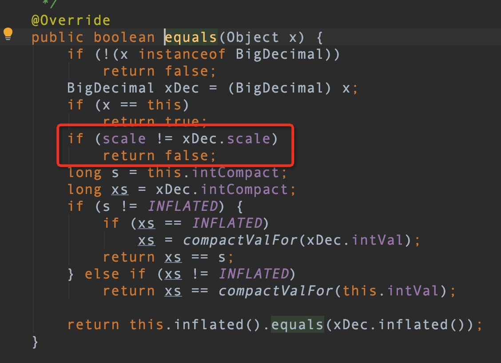

1 2 3 4 5 6 7 8 9 10 11 12 13 14 15 16 17 18 19 20 21 22 23 24 25 26 27 28 29 30 31 32 33 34 35 36 37 38 39 public class TestBigDecimal { public static void main(String[] args) { BigDecimal b1 = BigDecimal.valueOf(0.00); BigDecimal b2 = new BigDecimal(0.00); BigDecimal b3 = new BigDecimal("0.00"); System.out.println(b1); System.out.println(b2); System.out.println(b3); System.out.println("--------------"); System.out.println("equals比较"); System.out.println(contrast1(b1,b2)); System.out.println(contrast1(b1,b3)); System.out.println(contrast1(b2,b3)); System.out.println(contrast1(b1,BigDecimal.ZERO)); System.out.println(contrast1(b2,BigDecimal.ZERO)); System.out.println(contrast1(b3,BigDecimal.ZERO)); System.out.println("--------------"); System.out.println("compareTo比较"); System.out.println(contrast2(b1,b2)); System.out.println(contrast2(b1,b3)); System.out.println(contrast2(b2,b3)); System.out.println(contrast2(b1,BigDecimal.ZERO)); System.out.println(contrast2(b2,BigDecimal.ZERO)); System.out.println(contrast2(b3,BigDecimal.ZERO)); } public static boolean contrast1(BigDecimal b1,BigDecimal b2){ return b1.equals(b2); } public static int contrast2(BigDecimal b1,BigDecimal b2){ return b1.compareTo(b2); } }
运行结果：
1 2 3 4 5 6 7 8 9 10 11 12 13 14 15 16 17 18 19 0.0 0 0.00 -------------- equals比较 false false false false true false -------------- compareTo比较 0 0 0 0 0 0
